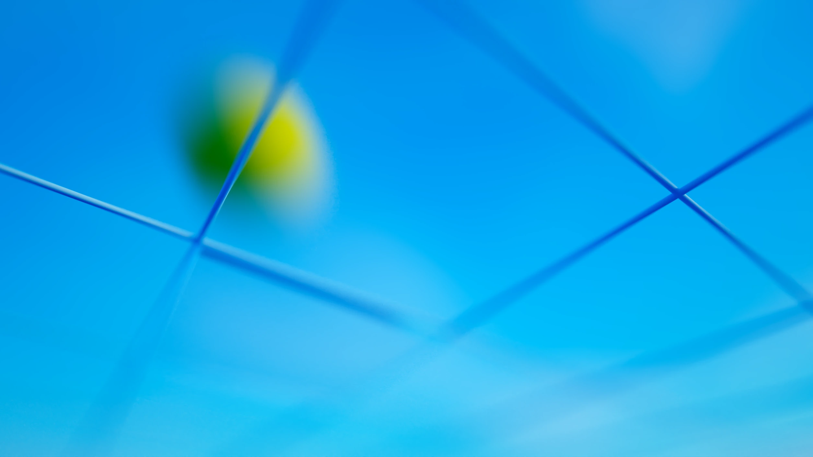

Australian Open
Every match point of a whole tournament caught mid-flight — ball-tracking data pulled out of the air and set down as sculpture.

Every match point of a whole tournament caught mid-flight — ball-tracking data pulled out of the air and set down as sculpture.